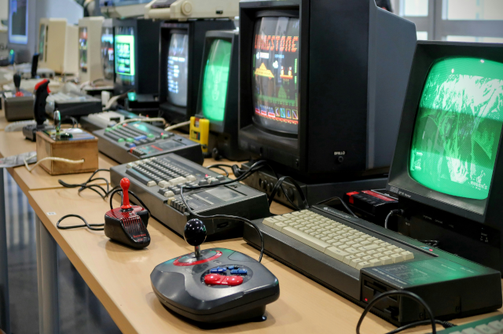

Novidades do mundo dos jogos
postado 06 setembro 2024

O cenário gamer está em constante evolução. Dos gráficos hiper-realistas às tecnologias de realidade aumentada, os jogos modernos proporcionam experiências cada vez mais imersivas. Com a chegada de novos consoles e atualizações frequentes, os jogadores estão sempre descobrindo novas formas de se divertir. Quer saber o que vem por aí? Acompanhe as principais tendências e lançamentos!
Leia mais
Jogos nostálgicos
postado 07 setembro 2024

Quem nunca passou horas jogando clássicos como Super Mario, Sonic ou Street Fighter? Os jogos retrô continuam conquistando fãs ao redor do mundo. Seja por meio de emuladores ou consoles retrô reeditados, reviver essas aventuras é uma viagem no tempo cheia de diversão. Nesta postagem, revisitamos os maiores ícones da era 8 e 16 bits!
Leia mais
Os mais jogados
postado 08 setembro 2024
Alguns jogos conquistam o coração dos fãs e permanecem no topo por anos. Títulos como Fortnite, Minecraft, League of Legends e os clássicos da Nintendo mantêm comunidades ativas e apaixonadas. Vamos explorar o que torna esses games tão especiais, além de curiosidades, recordes e os segredos por trás de seu sucesso duradouro.
Leia mais